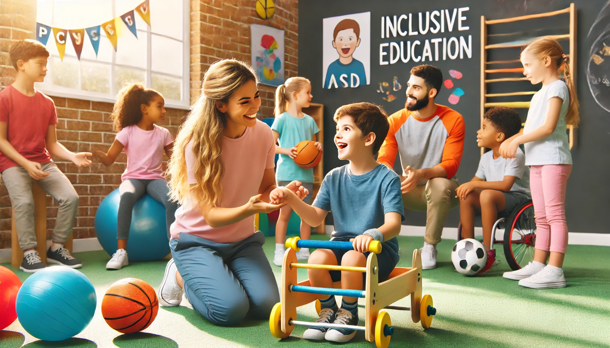

A inclusão de alunos com Transtorno do Espectro Autista (TEA) nas aulas de educação física é fundamental para o desenvolvimento social e motor dessas crianças. No entanto, para que essa inclusão seja efetiva, é essencial que os educadores físicos recebam o treinamento adequado.
O treinamento especializado permite que os professores entendam melhor as necessidades e os desafios enfrentados pelos alunos com TEA. Isso inclui compreender as características do espectro autista, bem como as melhores práticas para adaptar as atividades físicas de modo a torná-las acessíveis e eficazes para todos os alunos.
Um aspecto importante do treinamento é a sensibilização para a importância da comunicação clara e adaptada. Professores treinados são capazes de utilizar recursos visuais e instruções passo a passo para ajudar os alunos com TEA a compreenderem as atividades propostas. Além disso, aprendem a criar um ambiente seguro e acolhedor, onde os alunos se sentem valorizados e motivados a participar.
Benefícios do Treinamento para Educadores
Os benefícios do treinamento para educadores físicos são numerosos. Além de aumentar a confiança dos professores em lidar com a diversidade em sala de aula, o treinamento contribui para a criação de um ambiente mais inclusivo e equitativo. Alunos com TEA se beneficiam enormemente de um ambiente onde suas necessidades são compreendidas e atendidas de forma adequada.
O treinamento também promove a troca de experiências e estratégias entre os profissionais da educação. Isso enriquece o repertório de técnicas e abordagens pedagógicas, permitindo que os educadores adaptem suas práticas de acordo com as necessidades específicas de seus alunos.
"Educação inclusiva é uma jornada contínua de aprendizado e adaptação, onde cada passo dado com conhecimento e empatia faz toda a diferença." - Especialista em Educação Inclusiva
Implementando o Treinamento de Forma Eficaz
Para implementar o treinamento de forma eficaz, é importante que as instituições educacionais invistam em programas de capacitação contínua. Workshops, cursos de formação e palestras com especialistas são algumas das formas de manter os educadores atualizados e preparados para enfrentar os desafios da inclusão.
Além disso, a colaboração entre professores, pais e especialistas é crucial para o sucesso da inclusão de alunos com TEA. Ao trabalhar em conjunto, é possível desenvolver estratégias personalizadas que atendam às necessidades individuais de cada aluno, promovendo um ambiente de aprendizagem mais inclusivo e eficaz.
 Professores capacitados são a chave para a inclusão efetiva de alunos com TEA nas aulas de educação física.Em resumo, o treinamento de educadores físicos é uma peça fundamental na promoção da inclusão de alunos com TEA. Investir na capacitação desses profissionais é investir em um futuro onde todos os alunos têm a oportunidade de se desenvolver plenamente, independentemente de suas diferenças.